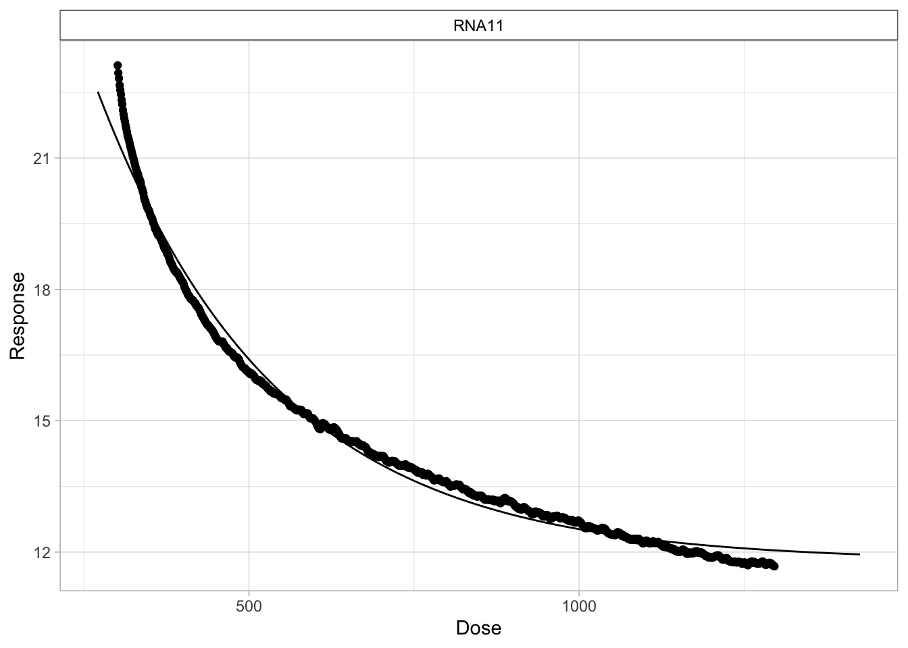

SPR Modelling
Brady Johnston
2021-10-03
Last updated: 2021-10-06
Checks: 6 1
Knit directory: smfret/
This reproducible R Markdown analysis was created with workflowr (version 1.6.2). The Checks tab describes the reproducibility checks that were applied when the results were created. The Past versions tab lists the development history.
The R Markdown file has unstaged changes. To know which version of the R Markdown file created these results, you’ll want to first commit it to the Git repo. If you’re still working on the analysis, you can ignore this warning. When you’re finished, you can run wflow_publish to commit the R Markdown file and build the HTML.
Great job! The global environment was empty. Objects defined in the global environment can affect the analysis in your R Markdown file in unknown ways. For reproduciblity it’s best to always run the code in an empty environment.
The command set.seed(20210916) was run prior to running the code in the R Markdown file. Setting a seed ensures that any results that rely on randomness, e.g. subsampling or permutations, are reproducible.
Great job! Recording the operating system, R version, and package versions is critical for reproducibility.
Nice! There were no cached chunks for this analysis, so you can be confident that you successfully produced the results during this run.
Great job! Using relative paths to the files within your workflowr project makes it easier to run your code on other machines.
Great! You are using Git for version control. Tracking code development and connecting the code version to the results is critical for reproducibility.
The results in this page were generated with repository version c92520b. See the Past versions tab to see a history of the changes made to the R Markdown and HTML files.
Note that you need to be careful to ensure that all relevant files for the analysis have been committed to Git prior to generating the results (you can use wflow_publish or wflow_git_commit). workflowr only checks the R Markdown file, but you know if there are other scripts or data files that it depends on. Below is the status of the Git repository when the results were generated:
Ignored files:
Ignored: .Rhistory
Ignored: .Rproj.user/
Ignored: data/smfret-data
Untracked files:
Untracked: analysis/fret-distributions.Rmd
Untracked: spr-rates.R
Unstaged changes:
Modified: analysis/_site.yml
Modified: analysis/differential-fitting.Rmd
Modified: analysis/formatting_data.Rmd
Modified: analysis/index.Rmd
Modified: analysis/spr-modelling.Rmd
Note that any generated files, e.g. HTML, png, CSS, etc., are not included in this status report because it is ok for generated content to have uncommitted changes.
These are the previous versions of the repository in which changes were made to the R Markdown (analysis/spr-modelling.Rmd) and HTML (docs/spr-modelling.html) files. If you’ve configured a remote Git repository (see ?wflow_git_remote), click on the hyperlinks in the table below to view the files as they were in that past version.
| File | Version | Author | Date | Message |
|---|---|---|---|---|
| Rmd | 50f2d31 | bradyajohnston | 2021-10-03 | did some SPR modelling for decay curves |
| html | 50f2d31 | bradyajohnston | 2021-10-03 | did some SPR modelling for decay curves |
Modelling the decay of protein binding in SPR.
df <- readr::read_rds("~/Dropbox/BondLab/Data/SPR/spr.rds")
df# A tibble: 178,932 × 3
time RNA Response
<dbl> <chr> <dbl>
1 -80 RNA01 0.0443
2 -80 RNA02 -0.0985
3 -80 RNA03 -0.310
4 -80 RNA04 -0.290
5 -80 RNA05 0.248
6 -80 RNA06 -0.0608
7 -80 RNA07 -0.139
8 -80 RNA08 0.0847
9 -80 RNA09 0.0138
10 -80 RNA10 0.0232
# … with 178,922 more rowsThere are a lot of time points per second, so fitting of models will be slow. We can sub-sample some of the points, to make modelling and plotting quicker and easier.
df <- df %>%
filter(time %% 1 == 0) %>%
rename(rna = RNA, resp = Response)The response chromatograms for the SPR experiments are shown, with application of the RNA at 0 s and the washout commencing at 300 s.
df %>%
# filter(str_detect(rna, "01|02|03|04")) %>%
ggplot(aes(time, resp, colour = rna)) +
geom_line() +
theme_classic() +
labs(x = "Time (s)",
y = "Response Units (RU)",
colour = "Sample RNA") +
theme(legend.position = "bottom")
SPR response chromatograms of all RNA samples tested.
| Version | Author | Date |
|---|---|---|
| 50f2d31 | bradyajohnston | 2021-10-03 |
Response Profiles
There are distinct shapes to the response profiles in the SPR traces. The target RNA01 shows a bi-phasic dissociation after the washout step begins. This indicates there it is not a single-step dissociation event occurring.
Dissociation can be modelled with a single-exponential decay model, with bi-phasic disssociation being able to be modelled with a double exponential decay model.
First we can look at the decay of the target RNA01.
df %>%
filter(time > 300,
rna == "RNA01") %>%
ggplot(aes(time, resp)) +
geom_line() +
theme_light()
| Version | Author | Date |
|---|---|---|
| 50f2d31 | bradyajohnston | 2021-10-03 |
If we try to fit a single-exponential decay model to this data, we see the following fit.
decay_data <- df %>%
filter(time > 300,
rna == "RNA01")
single_model <- nls(resp ~ SSasymp(time, Asym, R0, lrc), data = decay_data)
decay_plot <- decay_data %>%
ggplot(aes(time, resp)) +
geom_point() +
theme_light() +
labs(x = "Time (s)",
y = "Response Units (RU)")
plot1 <- decay_plot +
geom_line(
data = data.frame(
time = decay_data$time,
resp = single_model$m$fitted()
),
colour = "tomato",
size = 2
)
plot1
| Version | Author | Date |
|---|---|---|
| 50f2d31 | bradyajohnston | 2021-10-03 |
The curve does not fit well do the data. Not let us fit a double-exponential decay model.
double_model <- nls(
resp ~ SSbiexp(time, A1, t1, A2, t2),
data = decay_data
)
plot2 <- decay_plot +
geom_line(
data = data.frame(
time = decay_data$time,
resp = double_model$m$fitted()
),
colour = "tomato",
size = 1
)
patchwork::wrap_plots(
plot1 + labs(title = "Single Exponential Decay"),
plot2 + labs(title = "Double Exponential Decay"),
ncol = 2
)
| Version | Author | Date |
|---|---|---|
| 50f2d31 | bradyajohnston | 2021-10-03 |
This is a much better fit in comparison to the previous, which is certainly supportive of the model that this is not a single dissociation event that is occurring, instead that there are multiple steps that the protein must go through in order to unbind the RNA target, each with differing rates.
The fit is still not ideal, suggesting that potentially the interactions that are going on are still more complex than we can model, but trying to model any more steps to the process will be very unreliable and likely lead to incorrect over-fitting.
double_model_plot <- function(decay_data, title) {
single_model <-
nls(resp ~ SSasymp(time, Asym, R0, lrc), data = decay_data)
decay_plot <- decay_data %>%
ggplot(aes(time, resp)) +
geom_line() +
theme_light() +
labs(x = "Time (s)",
y = "Response Units (RU)")
plot1 <- decay_plot +
geom_line(
data = data.frame(
time = decay_data$time,
resp = single_model$m$fitted(),
model = factor("Single Exponential",
levels = c("Single Exponential",
"Double Exponential"))
),
colour = "tomato",
size = 1,
linetype = "dashed"
)
double_model <- nls(
resp ~ SSbiexp(time, A1, t1, A2, t2),
data = decay_data
)
plot2 <- plot1 +
geom_line(
data = data.frame(
time = decay_data$time,
resp = double_model$m$fitted(),
model = factor("Double Exponential",
levels = c("Single Exponential",
"Double Exponential"))
),
colour = "tomato",
size = 1,
linetype = "dashed"
)
naming_vector <- mdfret::rna_table$html_seq
names(naming_vector) <- mdfret::rna_table$rna
print(plot2 +
facet_wrap(~model, nrow = 1) +
labs(title = naming_vector[str_extract(title, "\\d+") %>%
str_remove("0")]) +
theme(
plot.title = ggtext::element_markdown()
)
)
}
double_model_plot(decay_data, "Testing RNA1")
| Version | Author | Date |
|---|---|---|
| 50f2d31 | bradyajohnston | 2021-10-03 |
Attempt to apply this principle to all of the remaining RNA.
df %>%
filter(time > 300) %>%
group_by(rna) %>%
nest() %>%
mutate(
plot = map2(data, rna, possibly(double_model_plot,
NA,
quiet = FALSE))
) Error: singular gradientError: singular gradientWarning in log(-coef(lm(log(ydiff) ~ x, data = xy))[[2L]]): NaNs producedError: Missing value or an infinity produced when evaluating the model
Error: singular gradient# A tibble: 13 × 3
# Groups: rna [13]
rna data plot
<chr> <list> <list>
1 RNA01 <tibble [996 × 2]> <gg>
2 RNA02 <tibble [996 × 2]> <lgl [1]>
3 RNA03 <tibble [996 × 2]> <gg>
4 RNA04 <tibble [996 × 2]> <gg>
5 RNA05 <tibble [996 × 2]> <lgl [1]>
6 RNA06 <tibble [996 × 2]> <gg>
7 RNA07 <tibble [996 × 2]> <gg>
8 RNA08 <tibble [996 × 2]> <gg>
9 RNA09 <tibble [996 × 2]> <gg>
10 RNA10 <tibble [996 × 2]> <gg>
11 RNA11 <tibble [996 × 2]> <gg>
12 RNA12 <tibble [996 × 2]> <lgl [1]>
13 RNA13 <tibble [996 × 2]> <lgl [1]>We are unable to fit the models to some of the traces, despite that there should be enough data for the model to fit successfully.
df %>%
filter(time > 300, time < 500, rna == "RNA11") %>%
ggplot(aes(time, jitter(resp, 100))) +
geom_line() +
geom_smooth(formula = "y ~ log(x)")`geom_smooth()` using method = 'loess'
| Version | Author | Date |
|---|---|---|
| 50f2d31 | bradyajohnston | 2021-10-03 |
# df %>%
# filter(time > 300, time < 400, rna == "RNA13") %>%
# nls(
# jitter(resp, 10000) ~ A1 * exp(-time / t1) + A2 * exp(-time / t2) + y0,
# data = .,
# start = list(
# y0 = 0,
# A1 = 2.6,
# t1 = 67,
# A2 = 13,
# t2 = 12
# ))
df %>%
filter(time > 300, rna == "RNA11") %>%
mutate(resp = jitter(resp, 1)) %>%
biochemr::b_dose_resp(time, resp, rna, .model = drc::EXD.3()) %>%
# biochemr::b_coefs()
biochemr::b_plot()
| Version | Author | Date |
|---|---|---|
| 50f2d31 | bradyajohnston | 2021-10-03 |
# df %>%
# filter(time > 300, rna == "RNA11") %>%
# mutate(resp = jitter(resp, 1)) %>%
# nls(resp ~ A1 * exp(-time / t1),
# data = .,
# start = list(
# A1 = 2.6,
# t1 = 400
# )) -> model2
sessionInfo()R version 4.1.0 (2021-05-18)
Platform: x86_64-apple-darwin17.0 (64-bit)
Running under: macOS Big Sur 10.16
Matrix products: default
BLAS: /Library/Frameworks/R.framework/Versions/4.1/Resources/lib/libRblas.dylib
LAPACK: /Library/Frameworks/R.framework/Versions/4.1/Resources/lib/libRlapack.dylib
locale:
[1] en_AU.UTF-8/en_AU.UTF-8/en_AU.UTF-8/C/en_AU.UTF-8/en_AU.UTF-8
attached base packages:
[1] stats graphics grDevices utils datasets methods base
other attached packages:
[1] forcats_0.5.1 stringr_1.4.0 dplyr_1.0.7 purrr_0.3.4
[5] readr_2.0.2 tidyr_1.1.4 tibble_3.1.4 ggplot2_3.3.5
[9] tidyverse_1.3.1 workflowr_1.6.2
loaded via a namespace (and not attached):
[1] nlme_3.1-152 ggtext_0.1.1 fs_1.5.0
[4] lubridate_1.7.10 httr_1.4.2 rprojroot_2.0.2
[7] tools_4.1.0 backports_1.2.1 bslib_0.2.5.1
[10] utf8_1.2.2 R6_2.5.1 DBI_1.1.1
[13] mgcv_1.8-36 colorspace_2.0-2 withr_2.4.2
[16] tidyselect_1.1.1 curl_4.3.2 compiler_4.1.0
[19] git2r_0.28.0 cli_3.0.1 rvest_1.0.1
[22] xml2_1.3.2 sandwich_3.0-1 labeling_0.4.2
[25] sass_0.4.0 scales_1.1.1 mvtnorm_1.1-2
[28] biochemr_0.1.0.9000 digest_0.6.28 foreign_0.8-81
[31] rmarkdown_2.11 rio_0.5.27 pkgconfig_2.0.3
[34] htmltools_0.5.2 plotrix_3.8-2 dbplyr_2.1.1
[37] fastmap_1.1.0 highr_0.9 rlang_0.4.11
[40] readxl_1.3.1 rstudioapi_0.13 jquerylib_0.1.4
[43] farver_2.1.0 generics_0.1.0 zoo_1.8-9
[46] jsonlite_1.7.2 gtools_3.9.2 zip_2.2.0
[49] car_3.0-11 magrittr_2.0.1 mdfret_0.1.4
[52] patchwork_1.1.1 Matrix_1.3-4 Rcpp_1.0.7
[55] munsell_0.5.0 fansi_0.5.0 abind_1.4-5
[58] lifecycle_1.0.1 multcomp_1.4-17 stringi_1.7.4
[61] whisker_0.4 yaml_2.2.1 carData_3.0-4
[64] MASS_7.3-54 grid_4.1.0 promises_1.2.0.1
[67] crayon_1.4.1 lattice_0.20-44 haven_2.4.3
[70] splines_4.1.0 gridtext_0.1.4 hms_1.1.1
[73] knitr_1.36 pillar_1.6.3 markdown_1.1
[76] codetools_0.2-18 reprex_2.0.1 glue_1.4.2
[79] drc_3.0-1 evaluate_0.14 data.table_1.14.2
[82] modelr_0.1.8 vctrs_0.3.8 tzdb_0.1.2
[85] httpuv_1.6.3 cellranger_1.1.0 gtable_0.3.0
[88] assertthat_0.2.1 openxlsx_4.2.4 xfun_0.26
[91] broom_0.7.9 later_1.3.0 survival_3.2-12
[94] TH.data_1.1-0 ellipsis_0.3.2